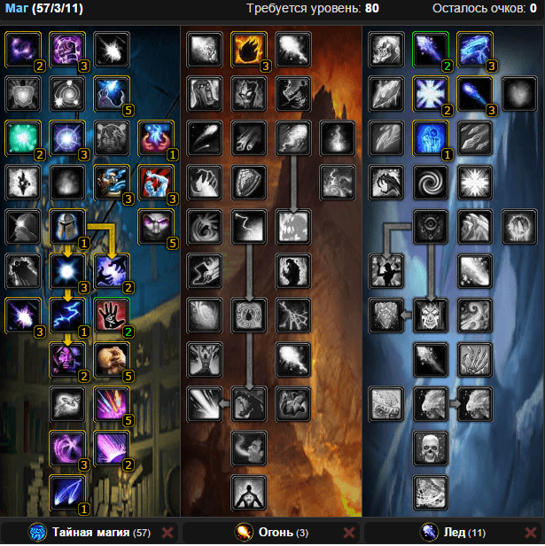

Гайд по Магу «Тайная магия» (Arcane) в PVE WOW Lich King 3.3.5
Итак начнем друзья! Аркан маг в ПВЕ как вы знаете ветка тайной магии сильно опережает фаер и фрост спеки по дпс. В данном руководстве рассмотрены все основные аспекты игры магом ветки «Тайная магия» в Lich King: таланты, билд, символы, ротация, подбор экипировки и многое другое.
Таланты
Характеристики
Способности
Ротация
Символы
Чары
Камни
Bis лист
Бонусы от профессий
Еда и Химия
Аддоны
1. Таланты
Билд 1.
Билд рассчитан на хороший дамаг и на сохранение хп

Билд 2.
Билд рассчитан на АоЕ урон:

2. Характеристики
1.Меткость — это первая по приоритетности характеристика для аркан мага в ПВЕ, кап меткости равен 17%
2.Скорость — хасты нам нужно как минимум 1200 пунктов, но кап равен 1400 пунктам
3.Критический удар — не так важен как для фаера, но не стоит забивать на него, набираем 45%
4.Сила заклинаний — набираем по максимуму, от СПД будет зависеть весь дамаг аркана
3. Способности
Магический доспех — Повышает сопротивление всем видам магии на 40, поддерживает восполнение маны со скоростью 50% от обычной во время произнесения заклинаний и сокращает время действия на вас отрицательных магических эффектов на 50%
Чародейский интеллект — Повышает интеллект цели на 60 на 1800 сек.
Чародейский взрыв — Порождает взрыв тайной магии вокруг заклинателя, который наносит 538 — 583 ед. урона от тайной магии всем целям в радиусе 10 м
Чародейские стрелы — В течение 5 сек. выпускает в противника чародейские стрелы, наносящие 360 ед. урона от тайной магии раз в 1 сек.
Мощь тайной магии — увеличивает урон, наносимый вашими заклинаниями, на 20% и затраты маны на 20%
Стылая кровь — Увеличивает скорость применения заклинаний на 20%
Чародейская вспышка — Поражает противника зарядом энергии, нанося ему 1185 — 1378 ед. урона от тайной магии. При каждом применении заклинания «Чародейская вспышка» затраты маны на последующее такое заклинание увеличиваются на 175% а весь урон, наносимый заклинаниями тайной магии, повышается на 15%. Эффект суммируется до 4 раз, длится 6 sec. или до произнесения любого заклинания тайной магии, кроме «Чародейской вспышки»
Чародейский обстрел — Запускает несколько волшебных стрел в противника, нанося 936 — 1145 ед. урона от тайной магии
4. Ротация
Так же не нужно забывать о маговских кулдаунов (если вы не знаете что такое кулдаун).
Важно!
«Величие разума» — позволит вам использовать заклинания без задержки;
Мощь тайной магии» — на 20% увеличивает урон мага;
«Зеркальное изображение» — если у вас есть 4/5 экипировки Т10, то при использовании можно заработать дополнительный эффект «Четырехъядерник».
5. Символы
Большие:
Малые:
6. Чары
7. Камни
8. Bis лист
9. Бонусы от профессий
10. Еда и Химия
Химия:
Еда:
Если у вас хватает меткости, то это лучшие варианты. Если меткость слабовата, то используем еду на хит.
11. Аддоны
ForteXorcist — отображает таймеры заклинаний для всех классов
Power Source — при наведении на баф, дебаф в тултипе показывает ник персонажа который вас бафнул либо наложил на вас проклятие
Decursive проверяет какие виды дебаффов (отрицательных эффектов) вы можете снимать и при нажатии на мини фрейм, снимает тот или иной яд, болезнь, проклятие, магию и т.д…
RangeColors — подскажет если вы не достаете до цели
OmniCC — отображает время о завершении перезарядки заклинания на иконке скила
Omen — подскажет вам о смене танка
Doom CooldownPulse — по истечению перезарядки заклинания отображает его вспышкой посреди экрана
Recount — отобразит на сколько вы эффективны